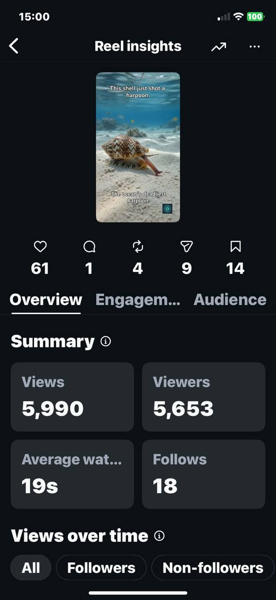
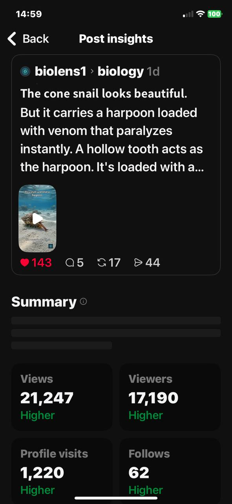
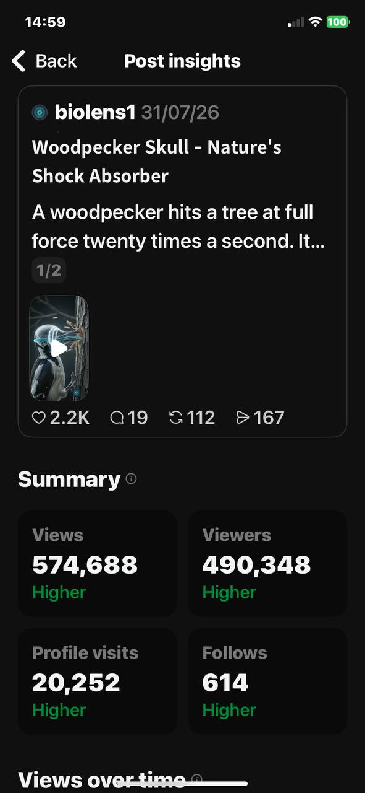

The exact opening formulas behind reels with half a million views. Free.
Every hook comes with the psychology behind why it works, when to use it, and a ready-to-paste AI prompt so you can generate the opening shot instead of filming it.
These are real insights screens from the BioLens account. Same hook formulas that are in this guide, applied to actual posts.



The woodpecker post opened on a disorienting close-up shot before pulling back to reveal the subject, the Macro-to-Wide Reveal hook. It's the difference between a post that gets scrolled past and one that gets watched to the end.
Learn the pattern once and you can build endless variations for your own niche, instead of copying clips you saw once and hoping they still work.
What it is, in plain language, so you can picture the shot before you film it.
The psychology behind it, so you can adapt it to your own content instead of copying someone else's clip.
The content types it fits, and the ones it doesn't. Knowing when not to use a hook matters just as much.
A ready-to-paste prompt for your AI video generator of choice, so you can generate the opening shot instead of filming it.
Open on an intense reaction shot, hold 2 to 4 seconds before showing what caused it.
The brain treats an unexplained reaction as an open question. It has to know what caused that face, so it keeps watching to close the gap.
Use when your payoff is genuinely strong: a transformation, a location, a result. If the reveal is average, this hook backfires because you set up a bigger expectation than you can pay off.
"Extreme close-up on a person's shocked face, eyes wide, mouth slightly open, natural window light, handheld camera, 3 second hold, then whip pan to reveal [your subject]. Cinematic, shallow depth of field."
Same format as the full system. Real hooks you can use today, not a watered-down teaser.
Once you're in, you'll see the option to unlock all 100 hooks across 10 categories, plus a quick-reference index to plan content fast.
Built around a payoff the viewer has to see land.
Opens a gap the brain won't leave unresolved.
Breaks the scroll rhythm in under a second.
Runs on threat detection, before the viewer decides to care.
People act harder to avoid losing than to gain.
Makes the viewer feel personally addressed.
Turns one clip into the start of a story to follow.
The cut itself does the attention-grabbing work.
Borrows reflexes viewers already have from their phone.
Turns a passive viewer into an active participant.